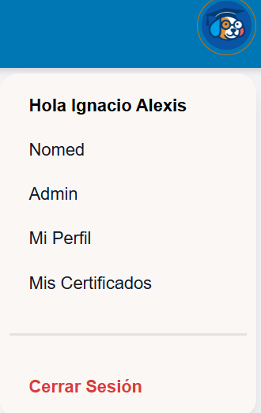
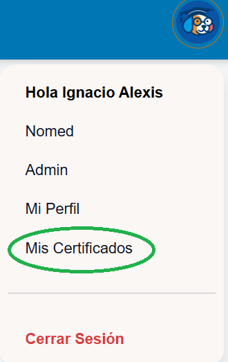
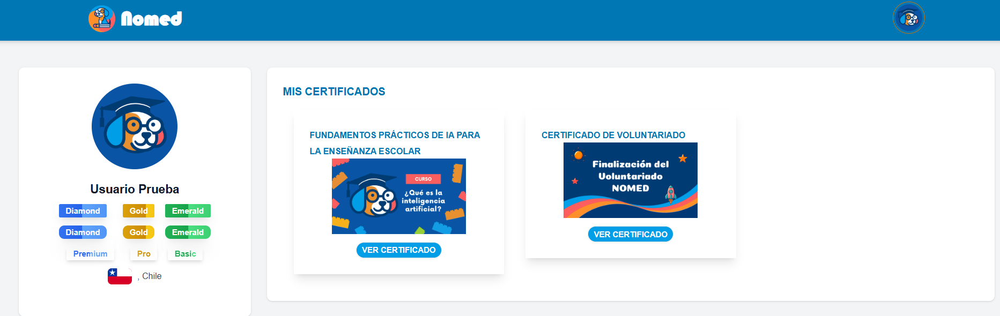
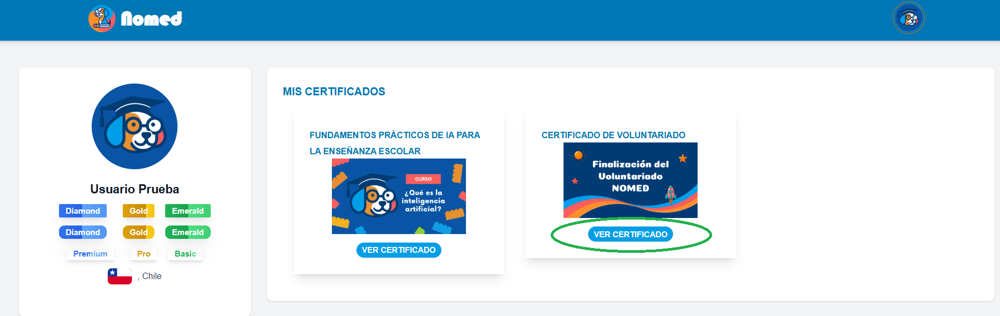
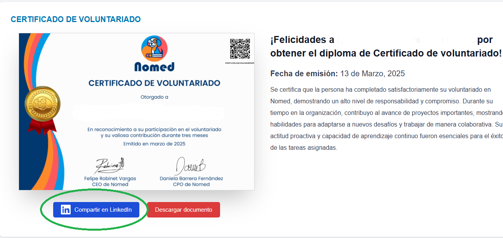
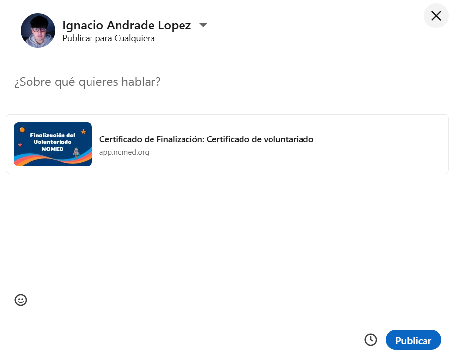
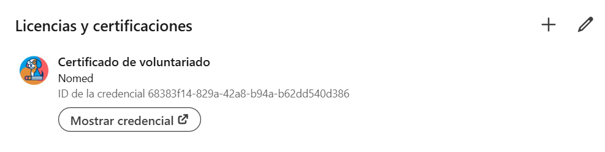
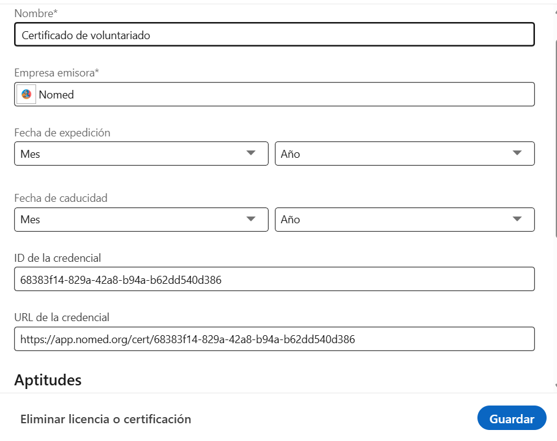
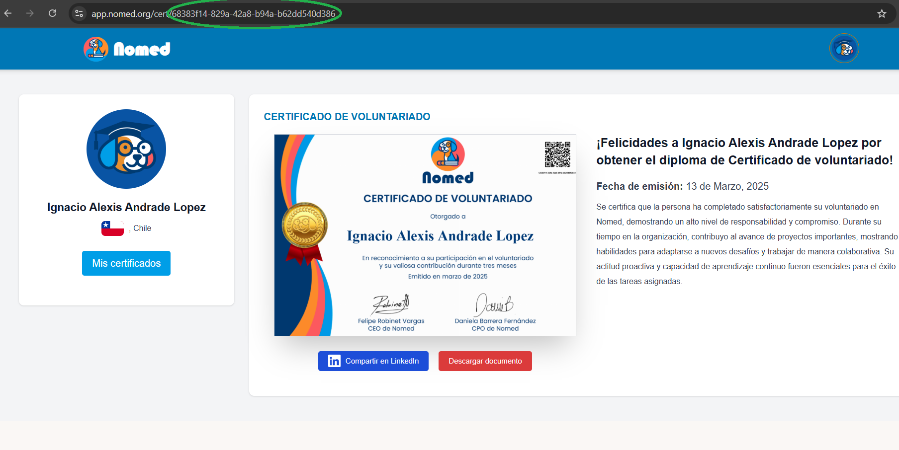
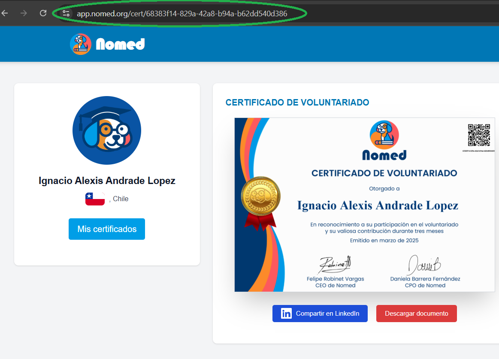

1) Click en foto de perfil
2) Ir a mis certificados
3) Aquí puedes ver todos tus certificados!
4) Click en "ver certificado"
5) Click en "Compartir en LinkedIn"
6) Hacer una publicación
1) Ir a mi perfil en LinkedIn
2) Agregar licencias y certificaciones
3) Rellenar el siguiente formulario:
4) ID credencial = números en link de página nomed
5) URL credencial = Link completo
6) Click en "Guardar"